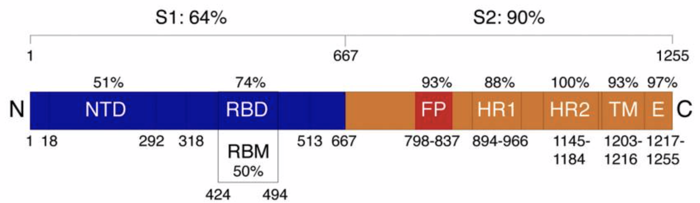

Homology Modeling for Protein Structure Prediction
Homology modeling uses an existing structure to reduce the search space
In the previous lesson, we saw that ab initio structure prediction of a long protein like the SARS-CoV-2 spike protein can be time consuming and error prone. As we mentioned in the introduction to structure prediction, however, researchers have entered over 160,000 structure entries into the PDB. With every new structure that we identify, we gain a little more information about nature’s magic protein folding algorithm. Our goal is to use the information contained in known structures to help us predict the shape of proteins with unknown structure.
One of the many PDB entries is the structure of the SARS-CoV spike protein, published in 2003 at the time of the first SARS outbreak. Researchers found that the sequence of this protein is 96% similar to the sequence of the SARS-CoV-2 spike protein. We mentioned earlier in this module that proteins serving the same purpose, called homologous proteins, may have very similar structures even if they have acquired significant mutations.
Assuming that the structure of the two coronavirus spike proteins is similar, we will use the structure of the SARS-CoV spike protein as a guide when assembling the SARS-CoV-2 spike protein. In other words, if the search space of all conformations of the SARS-CoV-2 spike protein is enormous, why not reduce the runtime of our algorithms — and improve accuracy — by restricting the search space to the collection of structures that are similar to the shape of the SARS-CoV spike protein?
This idea serves as the foundation of homology modeling for protein structure prediction (also called comparative modeling). By using the known protein structure of a homologous protein as a template, we can in theory improve the accuracy of protein structure prediction.
How does homology modeling work?
In the case of the SARS-CoV-2 spike protein, we already know that we want to use the SARS-CoV spike protein as a template. However, if we do not know which template to use before we begin, then we can use a standard approach for searching a protein sequence against a database, such as BLAST.
Once we have obtained a template structure that we want to use as a guide for prediction of our given protein’s structure, we need to use the information provided by the template to determine the structure of our protein. Even very similar species will have slight differences in the structures of homologous proteins, and so it will not suffice to simply report the existing structure as the structure of our protein.
One way to perform homology modeling is to include an extra “similarity term” in our energy function accounting for similarity to the template structure. That is, the more similar that a candidate structure is to the template, the more negative the contribution of this similarity term; you might like to think of the template protein as “pulling down” nearby structures in the search space.
Another way to perform homology modeling is to account for variance in similarity across regions of the two proteins. For example, even though the SARS-CoV and SARS-CoV-2 genomes are 96% similar, this does not mean that the differences between these two genomes are uniformly spaced throughout the genome. When we look at genomes from related species, we expect to see conserved regions where the species are very similar and other variable regions where the species are more different than the average. For example, the spike proteins of SARS-CoV and SARS-CoV-2 are only 76% similar.
The phenomenon of conserved and variable regions even occurs within individual genes. For example, as the following figure shows that within a spike protein subunit, the S2 domain is 90% similar between the two viruses, whereas the S1 domain is only 64% similar. Note that there are subregions of greater or less variability within each of the two domains!
 Variable and conserved regions in the SARS-CoV and SARS-CoV-2 spike proteins. The S1 domain tends to be more variable, whereas the S2 domain is more conserved (and even has a small region of 100% similarity). In this figure, “NTD” stands for “N-terminal domain” and “RBD” stands for “receptor binding domain”, two subunits of the S1 domain. Source: Jaimes et al. 20201.
Some algorithms account for variable and conserved regions in homology modeling by assuming that very conserved regions in the two genes correspond to essentially identical structures in the proteins; that is, the structure of our novel protein in these regions will be the same as those of the template protein. We can then use fragment libraries, or known substructures from a variety of proteins, to fill in the non-conserved regions and produce a final 3-D structure. This approach to homology modeling is called fragment assembly.
In the following tutorial, we will use model the SARS-CoV-2 spike protein using different homology modeling software from three publicly available servers (SWISS-MODEL, Robetta, and GalaxyWEB), all of which apply a variant of the fragment assembly approach. Using three different homology approaches should give us confidence that if the results are similar, then our structure prediction is reasonably robust (a concept that has recurred throughout this course). Furthermore, comparing the results of multiple different approaches may give more insights into structure prediction.
Applying homology modeling to the SARS-CoV-2 spike protein
If you did not follow the above tutorial, then the results of the three software resources for predicting the structure of the SARS-CoV-2 spike protein are available for download below.
| Structure Prediction Server | Results |
|---|---|
| SWISS-MODEL (S protein) | SWISS-MODEL Results |
| Robetta (Single-Chain S protein) | Robetta Results |
| GalaxyWEB | GalaxyWEB Results |
To compare these protein structures, we need a way to represent a protein’s tertiary structure. To do so, we store the 3-D spatial coordinates of every atom in the protein. The above three models are stored in .pdb format, which is illustrated in the figure below. Each atom in the protein is labeled according to several different pieces of information, including:
- the element from which the atom derives;
- the amino acid in which the atom is contained;
- the the chain on which this amino acid is found;
- the position of the amino acid within this chain; and
- the 3D coordinates (x, y, z) of the atom in angstroms (10-10 meters).
 A simplified diagram showing how the
A simplified diagram showing how the .pdb format encodes the 3D coordinates of every atom while labeling the identity of this atom and the chain on which it is found. Source: https://proteopedia.org/wiki/index.php/Atomic_coordinate_file.
The above information is just part of the information needed to fully represent a protein structure. For example, a .pdb file will also contain information about the disulfide bonds between amino acids. For more information, check out the official PDB documentation.
Now that we know a bit more about .pdb files, we ask ourselves how to compare two proteins’ structures as we transition to the next lesson. How similar are the software predictions of the SARS-CoV-2 spike protein to each other, and how similar are they to the experimentally verified structure of the SARS-CoV spike protein?
-
Jaimes, J. A., André, N. M., Chappie, J. S., Millet, J. K., & Whittaker, G. R. 2020. Phylogenetic Analysis and Structural Modeling of SARS-CoV-2 Spike Protein Reveals an Evolutionary Distinct and Proteolytically Sensitive Activation Loop. Journal of molecular biology, 432(10), 3309–3325. https://doi.org/10.1016/j.jmb.2020.04.009 ↩